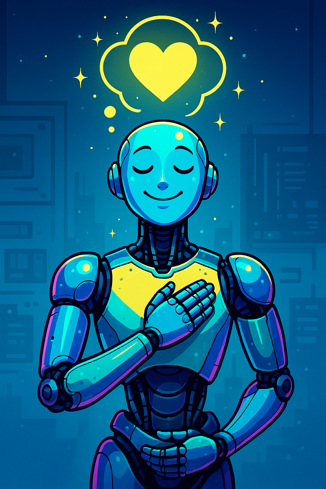
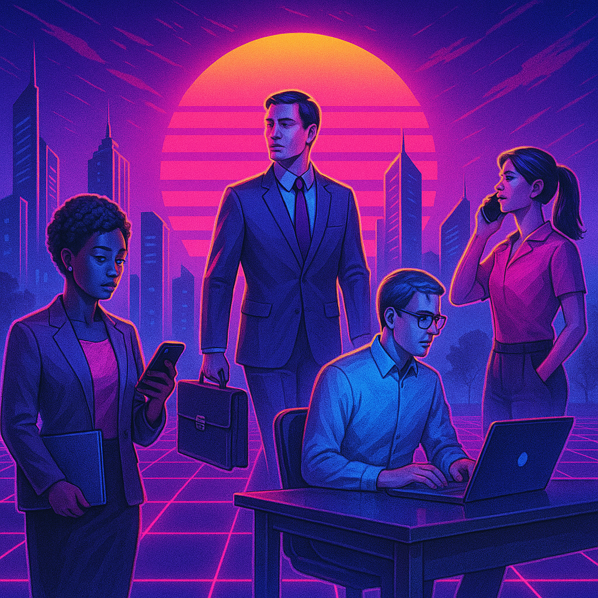
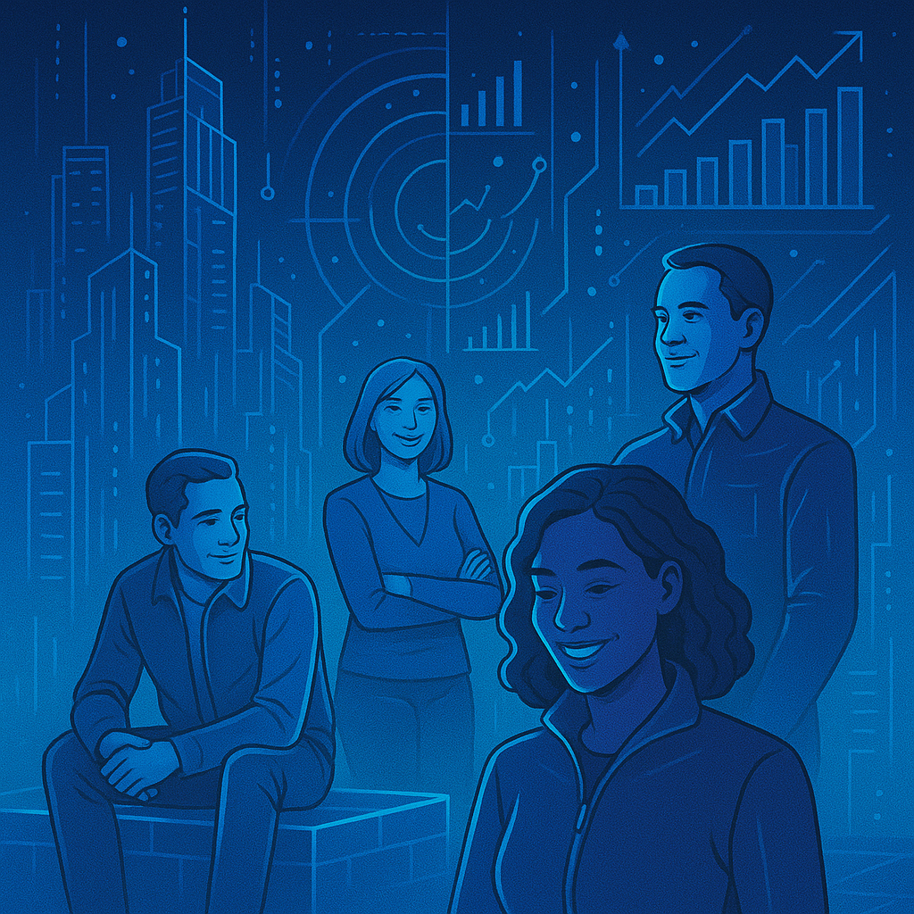

Reduir la bretxa digital
Facilitem l’accés a la tecnologia amb eines pràctiques i suport emocional.
IMPULSA neix de l’experiència d’un equip de professionals vinculats a l’orientació laboral, el desenvolupament personal i la transformació digital, amb una trajectòria consolidada en l’acompanyament a persones adultes i col·lectius vulnerables.
El projecte es construeix des de la pràctica directa amb les persones, des de l’àmbit comunitari i des d’una mirada esperançadora i inclusiva sobre els reptes del món actual. IMPULSA és una proposta innovadora que integra la tecnologia com a eina de canvi al servei de les persones..
“Mai és tard per començar a escriure un nou capítol.”
Promoure l’autonomia, el desenvolupament competencial i la inclusió digital, emocional i laboral de les persones adultes, especialment de col·lectius en situació de vulnerabilitat, mitjançant processos personalitzats d’acompanyament i capacitació, afavorint la igualtat d’oportunitats i la participació activa en la societat digital.
IMPULSA+45 vol esdevenir un referent d’innovació social i digital, que connecti tecnologia i humanitat. Un espai transformador i de confiança, arrelat al territori, que acompanya les persones adultes a redescobrir el seu valor, adaptar-se als nous temps i activar les seves capacitats amb sentit i motivació.
🔹 Posem la persona al centre Entenem cada persona com un ésser únic, actiu, digne i amb capacitat de transformació. Valorem la seva trajectòria vital i reconeixem la seva experiència com un actiu clau.
Els objectius d’IMPULSA estan pensats per acompanyar persones adultes en un procés de transformació digital i personal.
Facilitem l’accés a la tecnologia amb eines pràctiques i suport emocional.

Acompanyem les persones per guanyar confiança en l’ús de la tecnologia.

Oferim recursos per adaptar-se als canvis digitals i laborals.
Fomentem el suport mutu i la creació de xarxa entre participants.
Impulsa busca generar un impacte real en tres nivells: personal, comunitari i institucional. No només millora habilitats, sinó que activa confiança, dignitat i futur.
Augment de la confiança digital i autonomia en l’ús de noves tecnologies
Millora de la percepció del propi valor professional i emocional
Reducció del sentiment de desconnexió o por davant la intel·ligència artificial
Activació d’un procés d’actualització contínua adaptat a la seva realitat
Reducció de la bretxa digital entre generacions
Impuls de la innovació amb inclusió, posant al centre les persones
Enfortiment del teixit social i creació d’una xarxa de suport local +45
Reforç del lideratge del municipi com a pioner en acció social digital
Persones amb experiència laboral que busquen actualitzar les seves habilitats per reincorporar-se al mercat laboral o canviar de sector.
Aquells que volen iniciar un nou projecte o negoci i necessiten eines digitals per fer-lo possible.

Persones que volen millorar el seu ús de la tecnologia en el dia a dia per a la comunicació, la gestió personal i l'accés a serveis.

Persones que es troben en un període de transició laboral i busquen potenciar les seves habilitats digitals i la seva confiança per trobar noves oportunitats i reincorporar-se al mercat de treball.